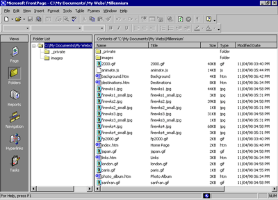
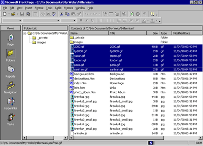
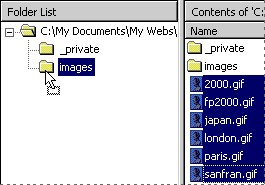

| ||||
Now that your Web site contains several pages and files, you will use Folders view to organize them. Similar to Windows Explorer, Folders view lets you manage the files and folders in your Web site. You can safely rearrange the pages and files in your Web site without breaking hyperlinks, page banner titles, or navigation button labels.
In Folders view, FrontPage displays a hierarchical list of the folders in your Web site on the left side of the screen. Clicking on a folder in the Folder List displays its contents on the right side -- the Contents pane.

In the following steps, you will move all the picture files in the Millennium Celebration Web to the Images folder FrontPage created as part of the Web site.
If you were to use Windows Explorer or another file manager to move pages and files from one folder to another, you would break the hyperlinks between your pages and page elements. However, when you maintain your Web site in Folders view, FrontPage keeps every page and hyperlink in your Web site updated to keep track of the new locations of files and folders that have been moved.
To move picture files to the Images folder
FrontPage switches to Folders view.
Clicking on a column label sorts the files in the Contents pane by that criteria. The first time you click a column label, the list is sorted in ascending order; when you click it a second time, it is sorted in descending order.
The list of files is now grouped by file type, with all GIF picture files at the top of the list, followed by HTM files (pages) in the middle, and all JPG pictures at the bottom of the list.

In Folders view, FrontPage supports all standard Windows selection shortcuts, such as SHIFT+CLICK for selecting ranges of files, and CTRL+CLICK for selecting noncontiguous files.

FrontPage displays the Rename dialog box while it is moving the selected GIF image files to the Images folder because it is automatically updating all hyperlinks to these files in the current Web site.
You've successfully grouped all picture files in the Images folder.
When you work with your own Web sites, you can group sound files, movie clips, and other types of files in their own folders. You can create new folders in Folders view as needed and delete the ones you no longer need.
To create a new folder
Folders can be expanded and collapsed in the Folder List to bring their subfolders into view. Click the plus (+) and minus (-) signs next to a folder's name to display or hide its subfolders.
FrontPage creates a new folder with a temporary name.
The new folder is renamed, and you can now drag and drop files into it.
For this tutorial, we don't need the extra folder you just created, so you will delete it before we get ready to publish the Web site.
FrontPage removes the folder from the Web site.
Did you find this material useful? Gripes? Compliments? Suggestions for other articles? Write us!
© 1999 Microsoft Corporation. All rights reserved. Terms of use.